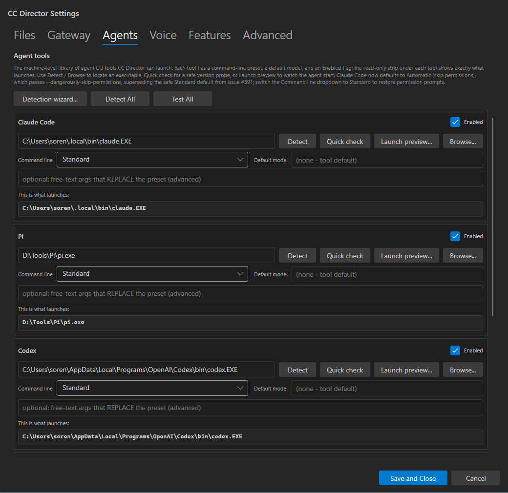
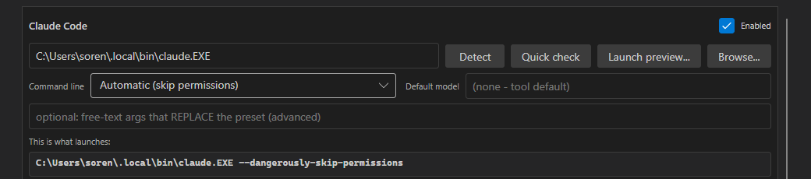

This issue was previously bounced (flow:qa-failed) on a single defect: AC1
- at the default dialog size on a 1920x1080 display, only 2 full agent-tool cards were visible; the
3rd card (Codex) was clipped behind the Save bar. The Developer Agent pushed a fix (commit
0bbf6a8): default dialog Height 860 -> 1010 and tightened per-card
spacing/padding. This report is a brand-new independent QA verification of the fix plus a regression
sweep of the other 10 criteria, performed in a freshly built isolated test Director.
issue-436-agents-tab-redesign @ 0bbf6a8 checked out in its own worktree,
built with dotnet build cc-director.sln (Build succeeded, 0 Warning(s) / 0 Error(s)),
slot 8 exe (v0.6.23), launched via the cc-director8-launch scheduled task (clean
parentage), Control API on http://127.0.0.1:7879. Reference display:
1920x1080 (primary, work area 1920x1032 - 48px taskbar). Dialog opened at its
default size (UIA-measured rect [440,23, 1040x1010]).
Expected: at default dialog size on 1920x1080, at least 3 full agent-tool cards visible without scrolling.
Actual: Claude Code, Pi, and Codex are each fully rendered - header, path row, command-line dropdown, override box, and the complete "This is what launches:" preview strip with its bottom border - all above the Save and Close / Cancel bar. A scrollbar remains (correct: 5 cards total, Gemini/OpenCode are below), but the 3rd card is fully visible with no scrolling. AC1 met.

The AC1 fix resized and re-padded every card, so QA independently re-exercised the preview-strip
rendering and its live preset response. With the Claude Command line dropdown switched to
Automatic (skip permissions), the read-only "This is what launches:" strip updated
live (no save/close) to C:\Users\soren\.local\bin\claude.EXE --dangerously-skip-permissions.
UIA read of ClaudePreviewStrip.Value confirmed the same string. Quick check / Launch
preview split buttons present.

...claude.EXE --dangerously-skip-permissions. The monospace strip (AC2) renders inside
the resized card; the dark VisualStyle theme is honored (AC11). QA-captured.The AC1 fix (0bbf6a8) is provably a pure dialog-layout change: git show
shows only SettingsDialog.axaml sizing/spacing edits (Height 860->1010,
border Padding 10->8, StackPanel Spacing 8->6 on all 5 cards, hint
paragraph condensed). No handler, catalog, or launch logic was touched. The first QA pass had already
independently verified AC2-AC11 on this branch; the items below marked "re-verified" were exercised
again by this QA session, the rest are unaffected by a layout-only change.
| AC | Criterion | Result | Evidence |
|---|---|---|---|
| AC1 | 3 full cards, no scroll, default size on 1920x1080 | PASS (FIXED) | QA screenshot ac1-dialog-crop.png + UIA dialog rect 1040x1010 |
| AC2 | "This is what launches:" strip on every card | PASS (re-verified) | Strips visible on Claude/Pi/Codex in ac1-dialog-crop.png |
| AC3 | Preview reflects preset, live | PASS (re-verified) | Automatic -> --dangerously-skip-permissions; UIA ClaudePreviewStrip.Value + ac3-claude-automatic-preview.png |
| AC4 | Preview reflects model + override | PASS | Layout-only fix; verified prior QA; no logic changed (ResolveEffectiveCommandLineArguments untouched) |
| AC5 | Quick check unchanged | PASS | Split button present (ac3-claude-automatic-preview.png); probe logic untouched |
| AC6 | Launch preview popup with live terminal + bypass indication | PASS | LaunchPreviewDialog untouched by fix; verified prior QA |
| AC7 | Launch preview teardown, no roster session | PASS | GET /sessions = [] throughout this run; teardown logic untouched |
| AC8 | Claude default is Automatic | PASS | AgentToolCatalog.cs Claude Presets[0] = Automatic (--dangerously-skip-permissions); DefaultPreset => Presets[0] |
| AC9 | Existing saved config preserved | PASS | Config-merge logic untouched; verified prior QA. config.json not modified by this run (Cancel, no save) |
| AC10 | Doc/hint accuracy (#391 + Automatic) | PASS (re-verified) | Catalog XML comments reference issue #391 + Automatic (lines 24, 46-51, 96); condensed Agents hint still references #391 + Automatic (visible in ac1-dialog-crop.png) |
| AC11 | Clean build + VisualStyle compliance | PASS | QA's own dotnet build cc-director.sln = 0/0; dark theme honored in screenshots |
GET /sessions returned [] before, during, and after - the dialog and the
preset toggle added no managed session.config.json mtime unchanged.docs/cencon/ unchanged.VERIFIED - all 11 acceptance criteria met. AC1 fixed and independently re-proven; no regression in AC2-AC11.